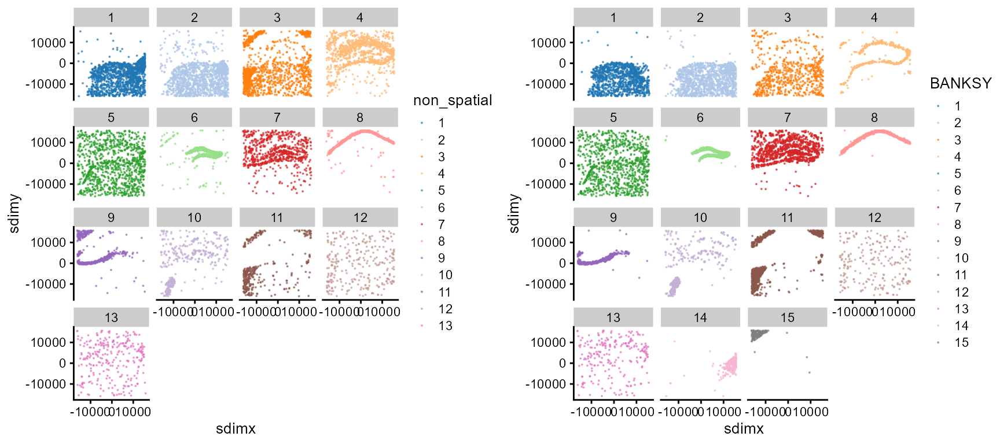
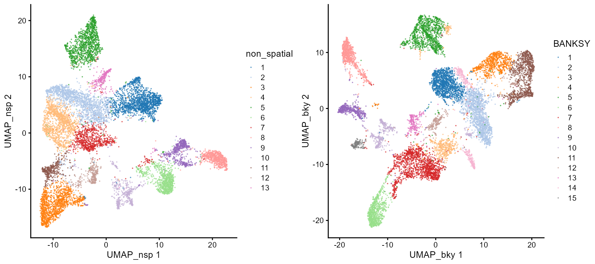
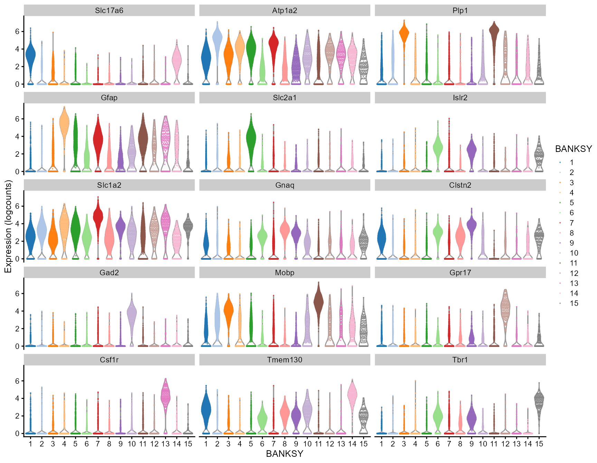

vignettes/single-cell-exp.Rmd
single-cell-exp.RmdHere, we demonstrate interoperability between Banksy and SingleCellExperiment with a mouse VeraFISH dataset.
The dataset comprises gene expression for 10,944 cells and 120 genes in 2 spatial dimensions. See ?Banksy::hippocampus for more details. We load Bioconductor packages for single-cell analyses, scater and scran, and create the SingleCellExperiment object.
library(Banksy)
library(scater)
library(scran)
library(gridExtra)
data(hippocampus)
# Create SCE
sce <- SingleCellExperiment(
assays = list(counts = hippocampus$expression),
colData = hippocampus$locations)
sce <- scater::logNormCounts(sce)We convert the SingleCellExperiment object to a BanksyObject, and run the BANKSY pipeline. In summary, we run BANKSY with lam=0 corresponding to non-spatial clustering, and lam=0.3 which incorporates spatial information. We compute 20 PCs, construct a shared nearest neighbor graph and cluster the graph with Leiden clustering.
# Convert to BanksyObject
bank <- asBanksyObject(sce, expr.assay = 'counts',
coord.colnames = c('sdimx', 'sdimy'))
# Run pipeline
bank <- NormalizeBanksy(bank, normFactor = 100)
bank <- ComputeBanksy(bank, k_geom = 10, spatialMode = 'kNN_r')
#> Computing neighbors...
#> Computing neighbor matrix...
#> Done
bank <- ScaleBanksy(bank)
bank <- RunPCA(bank, lambda = c(0,0.3), npcs = 20)
#> Running PCA for lambda=0
#> Running PCA for lambda=0.3
bank <- RunUMAP(bank, lambda = c(0,0.3), pca = TRUE, npcs = 20)
#> Computing UMAP with 20 PCs
#> Running UMAP for lambda=0
#> Computing UMAP with 20 PCs
#> Running UMAP for lambda=0.3
set.seed(42)
bank <- ClusterBanksy(bank, lambda = c(0,0.3), npcs = 20,
method = 'leiden', k.neighbors = 50, resolution = 1)
#> Iteration 1 out of 2
#> Iteration 2 out of 2
bank <- ConnectClusters(bank, map.to = clust.names(bank)[1])Output from the BANKSY run can be added to the original SingleCellExperiment object. Here, we add the cluster labels and the PCA and UMAP cell embeddings.
# Add data to SCE
sce$non_spatial <- factor(meta.data(bank)$clust_lam0_k50_res1)
sce$BANKSY <- factor(meta.data(bank)$clust_lam0.3_k50_res1)
reducedDims(sce) <- list(UMAP_nsp = reduction(bank)$umap_0,
UMAP_bky = reduction(bank)$umap_0.3,
PCA_nsp = reduction(bank)$pca_0$x,
PCA_bky = reduction(bank)$pca_0.3$x)Visualise the cells in UMAP and spatial dimensions:
grid.arrange(
plotColData(sce, x = 'sdimx', y = 'sdimy', colour_by = 'non_spatial',
point_size = 0.05) + facet_wrap(~ colour_by),
plotColData(sce, x = 'sdimx', y = 'sdimy', colour_by = 'BANKSY',
point_size = 0.05) + facet_wrap(~ colour_by),
ncol = 2)
grid.arrange(
plotReducedDim(sce, dimred = 'UMAP_nsp', colour_by = 'non_spatial',
point_size = 0.05),
plotReducedDim(sce, dimred = 'UMAP_bky', colour_by = 'BANKSY',
point_size = 0.05),
ncol = 2)
We can find markers for each BANKSY cluster with scran:
colLabels(sce) <- sce$BANKSY
marker.info <- scoreMarkers(sce, colLabels(sce))
features <- sapply(marker.info, function(m) {
m <- m[order(m$mean.AUC, decreasing = TRUE),]
head(rownames(m), n = 1)
})
plotExpression(sce, features = features, x = 'BANKSY', colour_by = 'BANKSY',
point_size = 0.1, ncol = 3)
sessionInfo()
#> R version 4.1.2 (2021-11-01)
#> Platform: x86_64-w64-mingw32/x64 (64-bit)
#> Running under: Windows 10 x64 (build 19043)
#>
#> Matrix products: default
#>
#> locale:
#> [1] LC_COLLATE=English_Singapore.1252 LC_CTYPE=English_Singapore.1252
#> [3] LC_MONETARY=English_Singapore.1252 LC_NUMERIC=C
#> [5] LC_TIME=English_Singapore.1252
#>
#> attached base packages:
#> [1] stats4 stats graphics grDevices utils datasets methods
#> [8] base
#>
#> other attached packages:
#> [1] gridExtra_2.3 scran_1.22.1
#> [3] scater_1.22.0 ggplot2_3.3.5
#> [5] scuttle_1.4.0 SingleCellExperiment_1.16.0
#> [7] SummarizedExperiment_1.24.0 Biobase_2.54.0
#> [9] GenomicRanges_1.46.1 GenomeInfoDb_1.30.1
#> [11] IRanges_2.28.0 S4Vectors_0.32.3
#> [13] BiocGenerics_0.40.0 MatrixGenerics_1.6.0
#> [15] matrixStats_0.61.0 Banksy_0.1.3
#>
#> loaded via a namespace (and not attached):
#> [1] circlize_0.4.14 systemfonts_1.0.4
#> [3] plyr_1.8.6 igraph_1.2.11
#> [5] BiocParallel_1.28.3 digest_0.6.29
#> [7] foreach_1.5.2 htmltools_0.5.2
#> [9] viridis_0.6.2 ggalluvial_0.12.3
#> [11] fansi_0.5.0 magrittr_2.0.1
#> [13] memoise_2.0.1 ScaledMatrix_1.2.0
#> [15] cluster_2.1.2 doParallel_1.0.17
#> [17] limma_3.50.1 ComplexHeatmap_2.10.0
#> [19] pkgdown_2.0.2 sccore_1.0.1
#> [21] colorspace_2.0-2 ggrepel_0.9.1
#> [23] textshaping_0.3.6 xfun_0.29
#> [25] dplyr_1.0.7 crayon_1.5.0
#> [27] RCurl_1.98-1.6 jsonlite_1.8.0
#> [29] iterators_1.0.14 glue_1.6.0
#> [31] pals_1.7 gtable_0.3.0
#> [33] zlibbioc_1.40.0 XVector_0.34.0
#> [35] GetoptLong_1.0.5 DelayedArray_0.20.0
#> [37] leidenAlg_1.0.2 BiocSingular_1.10.0
#> [39] shape_1.4.6 maps_3.4.0
#> [41] scales_1.1.1 DBI_1.1.2
#> [43] edgeR_3.36.0 Rcpp_1.0.7
#> [45] viridisLite_0.4.0 clue_0.3-60
#> [47] dqrng_0.3.0 rsvd_1.0.5
#> [49] mapproj_1.2.8 mclust_5.4.9
#> [51] metapod_1.2.0 RColorBrewer_1.1-2
#> [53] ellipsis_0.3.2 farver_2.1.0
#> [55] pkgconfig_2.0.3 sass_0.4.0
#> [57] uwot_0.1.11 locfit_1.5-9.5
#> [59] utf8_1.2.2 labeling_0.4.2
#> [61] tidyselect_1.1.2 rlang_1.0.2
#> [63] munsell_0.5.0 tools_4.1.2
#> [65] cachem_1.0.6 cli_3.1.0
#> [67] dbscan_1.1-10 generics_0.1.2
#> [69] evaluate_0.15 stringr_1.4.0
#> [71] fastmap_1.1.0 yaml_2.2.1
#> [73] ragg_1.2.2 knitr_1.37
#> [75] fs_1.5.2 purrr_0.3.4
#> [77] RcppHungarian_0.2 sparseMatrixStats_1.6.0
#> [79] grr_0.9.5 compiler_4.1.2
#> [81] rstudioapi_0.13 beeswarm_0.4.0
#> [83] png_0.1-7 tibble_3.1.6
#> [85] statmod_1.4.36 bslib_0.3.1
#> [87] stringi_1.7.6 highr_0.9
#> [89] desc_1.4.1 RSpectra_0.16-0
#> [91] lattice_0.20-45 bluster_1.4.0
#> [93] Matrix_1.3-4 vctrs_0.3.8
#> [95] pillar_1.7.0 lifecycle_1.0.1
#> [97] jquerylib_0.1.4 GlobalOptions_0.1.2
#> [99] RcppAnnoy_0.0.19 BiocNeighbors_1.12.0
#> [101] cowplot_1.1.1 data.table_1.14.2
#> [103] bitops_1.0-7 irlba_2.3.5
#> [105] Matrix.utils_0.9.8 R6_2.5.1
#> [107] vipor_0.4.5 codetools_0.2-18
#> [109] dichromat_2.0-0 assertthat_0.2.1
#> [111] rprojroot_2.0.2 rjson_0.2.21
#> [113] withr_2.5.0 GenomeInfoDbData_1.2.7
#> [115] parallel_4.1.2 grid_4.1.2
#> [117] beachmat_2.10.0 rmarkdown_2.13
#> [119] DelayedMatrixStats_1.16.0 ggbeeswarm_0.6.0